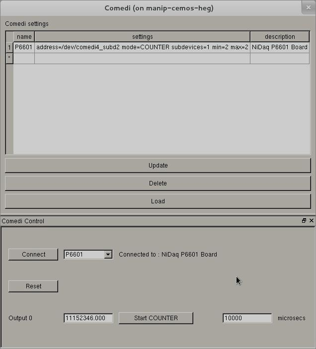

Comedi devices are accessible using the Comedi project. Refer to the documentation at the Comedi project website.

| name | This is a unique name given by the user defining the Comedi board instance. |
| settings |
The device path, mode of operation (DAC or COUNTER), subdevice identifier,
number of outputs, and range (MIN/MAX). Example setting line:
|
| description | A brief description of the Comedi board. |